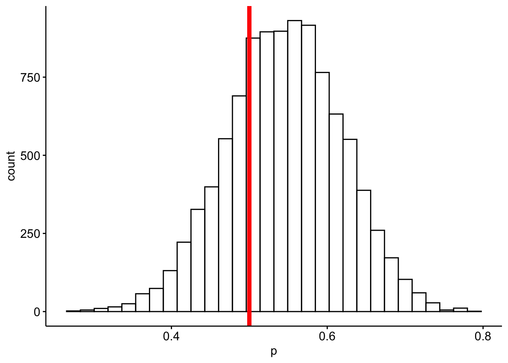
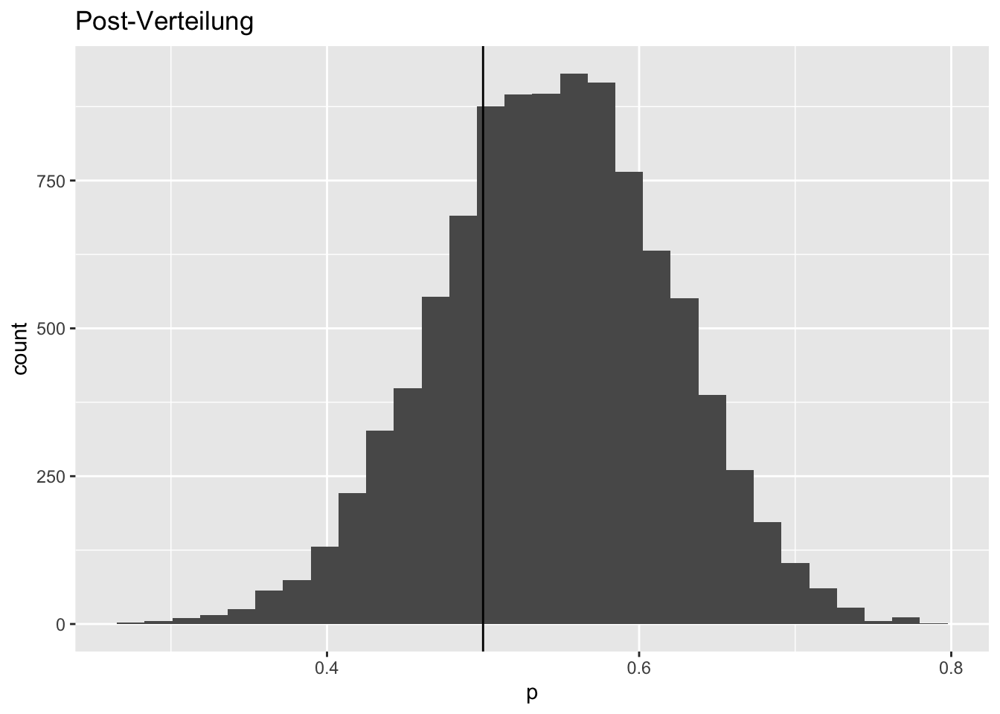
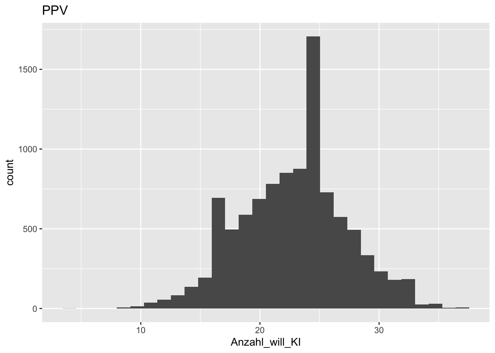

p_grid <- seq(from=0,
to=1,
length.out=1000) # Gitterwerte
prior <- rep(1, 1000) # Priori-Gewichte
set.seed(42) # Zufallszahlen festlegen
likelihood <- dbinom(23, size = 42, prob=p_grid )
unstandardisierte_posterior <- likelihood * prior
posterior <- unstandardisierte_posterior / sum(unstandardisierte_posterior)Weinhaendler
probability
bayesbox
bayes
qm2
qm2-pruefung2023
Aufgabe
Sie sind kürzlich in ein Startup-Unternehmen eingestiegen. Das Unternehmen versucht, einen Online-Weinhandel aufzubauen. Kern des Unternehmens ist eine künstliche Intelligenz, die versucht, den Kundis den best möglich passenden Wein anzudreh… zu verkaufen.
Sie haben sich bei Ihrem Bewerbungsgespräch persönlich von der Qualität der Produkte eingehend überzeugt und sind daher hoch motiviert, sich zum Wohle des Unternehmens einzusetzen.
Kürzlich hat eine Beratungsfirma, die Ihre Kunden im Rahmen einer qualitativen Studie untersucht hat, herausgefunden, dass doch ein beachtlicher Teil von einem Menschen, nicht von einem Roboter (bzw. der KI) beim Wein aussuchen beraten werden möchte. Diesen Anteil von Kunden (die nicht von der KI beraten werden möchten) möchten Sie jetzt genauer bestimmen.
Dazu haben Sie \(N=42\) Kundis befragt. Gut die Hälfte (\(n=23\)) hat sich zugunsten der KI ausgesprochen; der Rest der Kundis möchte lieber von einem Menschen beraten werden.
Gehen Sie im Folgenden davon aus, dass die Studie bzw. die erhaltenen Daten von guter Qualität ist (man also keine Probleme wie mangelnde Repräsentativität erwarten muss).
Verwenden Sie die Gittermethode und gleichverteilte Priori-Werte.
Wie groß ist die Wahrscheinlichkeit, dass die KI-freundlichen Kundis bei Ihnen überwiegen?
Wie groß ist die Wahrscheinlichkeit (laut Modell), dass künftig eine Mehrheit an KI-freundlichen Kundis zu beobachten sein wird?
Wenn Sie nur eine Zahl angeben dürften: Was ist Ihr Schätzwert zum Anteil der KI-Freunde (in dieser Studie)?
Lösung
A)
- Wie groß ist die Wahrscheinlichkeit (laut Modell), dass die KI-freundlichen Kundis bei Ihnen überwiegen?
Das ist eine Frage nach der kumulative Verteilungsfuntion (cumulative distribution function, cdf).
Ziehen wir daraus Stichproben:
set.seed(42) # Zufallszahlen festlegen
samples <-
tibble(
p = sample(p_grid ,
prob = posterior,
size=1e4,
replace=TRUE))
samples <-
samples %>%
mutate(id = 1:nrow(samples))samples %>%
filter(p > 0.5) %>%
summarise(wskt_mehrheit_will_ki = n()/nrow(samples))| wskt_mehrheit_will_ki |
|---|
| 0.7309 |
Visualisieren:
Mit {ggpubr}:
library(ggpubr)
gghistogram(samples, x = "p") +
geom_vline(xintercept = 0.5, color = "red", linewidth=2) 
Mit {ggplot2}:
samples %>%
ggplot() +
aes(x = p) +
geom_histogram() +
geom_vline(xintercept = 0.5) +
labs(title = "Post-Verteilung")
b)
- Wie groß ist die Wahrscheinlichkeit (laut Modell), dass künftig eine Mehrheit an KI-freundlichen Kunfis zu beobachten sein wird?
PPV <-
samples %>%
mutate(Anzahl_will_KI = rbinom(n = 1e4, size = 42, prob = p))PPV %>%
ggplot() +
aes(x = Anzahl_will_KI) +
geom_histogram() +
labs(title = "PPV")
Eine Mehrheit entspricht mind. 22 von 42 Personen.
PPV %>%
filter(Anzahl_will_KI >= 22) %>%
summarise(prob_mehrheit_will_ki = n()/nrow(PPV))| prob_mehrheit_will_ki |
|---|
| 0.6227 |
C)
- Wenn Sie nur eine Zahl angeben dürften: Was ist Ihr Schätzwert zum Anteil der KI-Freunde (in dieser Studie)?
Man könnte den Mittelwert oder den Median angeben:
library(easystats)
describe_distribution(samples)| Variable | Mean | SD | IQR | Min | Max | Skewness | Kurtosis | n | n_Missing |
|---|---|---|---|---|---|---|---|---|---|
| p | 0.5448855 | 0.0736796 | 0.1001001 | 0.2742743 | 7.887888e-01 | -0.0884649 | -0.0591925 | 10000 | 0 |
| id | 5000.5000000 | 2886.8956799 | 5000.5000000 | 1.0000000 | 1.000000e+04 | 0.0000000 | -1.2000000 | 10000 | 0 |
Categories:
- probability
- bayes-box
- bayes
- string